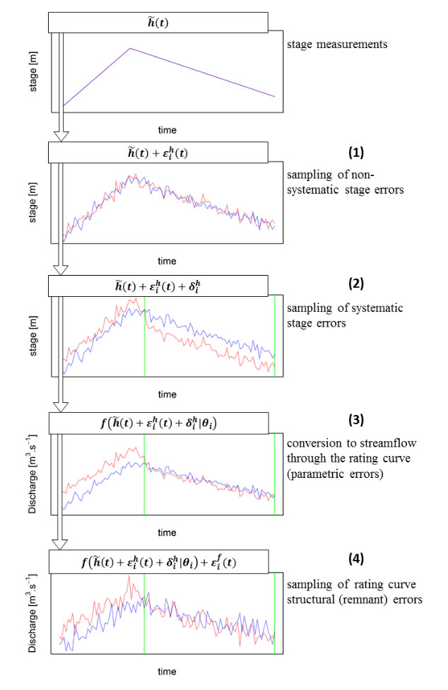

This document describes how errors from the rating curve (parametric errors and structural errors) and those from the stage time series (non-systematic and systematic stage measurement errors) are propagated to the discharge time series in BaRatinAGE.
The estimation of a rating curve in BaRatinAGE is actually based on 500 rating curves, each corresponding to a parameter set (parameters are those of the equation of the rating curve, \(\boldsymbol{\theta}\), along with parameters \(\boldsymbol{\gamma}=(\gamma_1,\gamma_2)\) used to define the standard deviation of structural errors). The stage series is a time series of recorded water levels \(\tilde{h}(t)\). Standard deviations \(\sigma_A^h\) and \(\sigma_B^h\) (corresponding to non-systematic and systematic errors affecting the stage series) can be used to generate 500 stage series. The propagation method is described below for a rating curve \(i\) (i.e., one particular parameter set):
- At each time step \(t\), an error \(\varepsilon_i^h(t)\) is sampled from the Gaussian distribution \(\mathcal{N}(0,\sigma_A^h)\). The error is added to the measured stage \(\tilde{h}(t)\).
- For each period during which the systematic error affecting the stage series is constant, an error \(\delta_i^h\) is sampled from the Gaussian distribution \(\mathcal{N}(0,\sigma_B^h)\). The error is added to the measured stage already affected by non-systematic errors. The \(i\)th stage series is hence obtained as: \(h_i(t) = \tilde{h}(t) + \varepsilon_i^h(t) + \delta_i^h\).
- At each time step \(t\), the discharge \(\hat{Q}_i(t)\) is computed from the stage series \(h_i(t)\) and the rating curve equation \(f\) with parameters \(\boldsymbol{\theta}_i\).
- At each time step \(t\), a structural error rating curve \(\varepsilon_i^f(t)\) is finally added to the computed discharge \(\hat{Q}_i(t)\). The error is sampled from the Gaussian distribution \(\mathcal{N}\left( 0,\gamma_1 + \gamma_2 \hat{Q}_i(t) \right)\).
The equation combining these various steps is given below:
\[Q_i(t) = \underbrace{f \left( \overbrace{\tilde{h}(t) + \varepsilon_i^h(t) + \delta_i^h}^{h_i(t)} ; \boldsymbol{\theta}_i \right)}_{\hat{Q}_i(t)} + \varepsilon_i^f(t)\]
The figure below illustrates and summarizes the successive computational steps.
Principle of the propagation method illustrated with two parameter sets \(\boldsymbol{\theta}_{i_1}\) (red) and \(\boldsymbol{\theta}_{i_2}\) (blue): from the measured stage series to the two flow series (each corresponding to a parameter set, i.e. a possible rating curve and a possible stage series).
The MaxPost (most probable) rating curve is obtained by ignoring all error sources: \(Q_{MP}(t) = f(\tilde{h}(t) ; \boldsymbol{\theta}_{MP})\) where \(\boldsymbol{\theta}_{MP}\) is the paameter set defining the MaxPost rating curve.